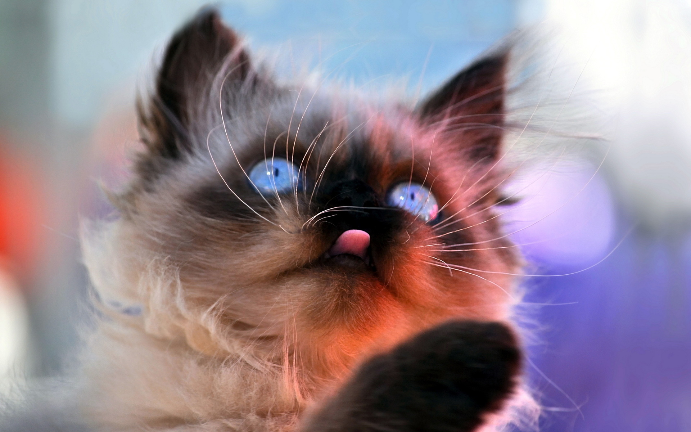
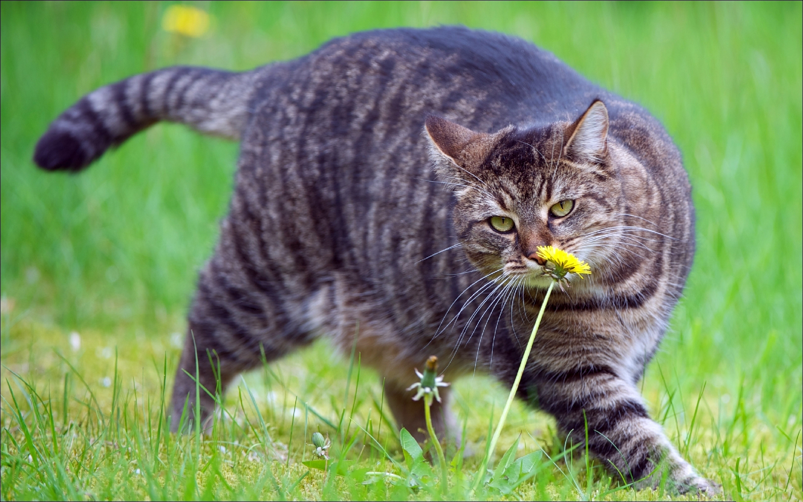

Лежанка. Это удобное место для сна, где котенок или кошка будут чувствовать себя комфортно и безопасно. Рекомендуется расположить лежанку повыше, желательно в тихом, безопасном для котенка месте, вдали от сквозняков.
Лоток. Он должен быть достаточно глубоким, но не слишком, так как высокие стенки могут отпугнуть котенка. Вам также понадобится совок для удаления экскрементов.
Миски для воды. У кошки всегда должен быть доступ к свежей воде. Можно использовать фонтанчики как альтернативу мискам, поскольку кошкам, как известно, нравится смотреть, как льется вода. Это привлекает их внимание и побуждает пить воду.
Миски для корма. Вам потребуется небольшая миска для корма. Ее необходимо установить на достаточном расстоянии от миски для воды во избежание загрязнения воды. Кроме того, можно воспользоваться «пищевыми головоломками». Они особенно хорошо подойдут для кошки, постоянно содержащейся в помещении. Такая кормушка станет отличным стимулом для развития умственных способностей, источником физических нагрузок и средством для раскрытия природного охотничьего инстинкта животного. Необходимо дать кошке время привыкнуть к такой кормушке, поэтому не следует сразу же полностью заменять «головоломкой» миску для корма.
Игровой комплекс для кошек. Это дополнительное приобретение — не просто развлечение. Оно имеет и ряд полезных функций, так как позволяет кошке точить когти, лазать и прятаться в укрытии, а также способствует хорошему самочувствию животного и реализации его природных инстинктов.

Окружающая обстановка очень важна для здоровья и хорошего самочувствия кошки. Благоприятная обстановка позволяет кошке безопасно социализироваться и привыкнуть к людям и вещам вокруг нее.
Даже если кошка еще очень мала, она будет организовывать свою территорию и обозначать ее границы. На этой территории животное будет спать, играть, охотиться, есть, прятаться, лазать и общаться с людьми. Кошка «делит» свое пространство на четыре различные зоны, и вы должны уважать ее выбор, чтобы избежать проблем с поведением, особенно у кошек, постоянно содержащихся в помещении.
Кошки, которые постоянно содержатся в помещении, нуждаются в регулярных физических нагрузках: это не только поддержит их физическую форму, но и окажет стимулирующее воздействие на ментальные функции. Это означает, что кошкам необходимо следующее.